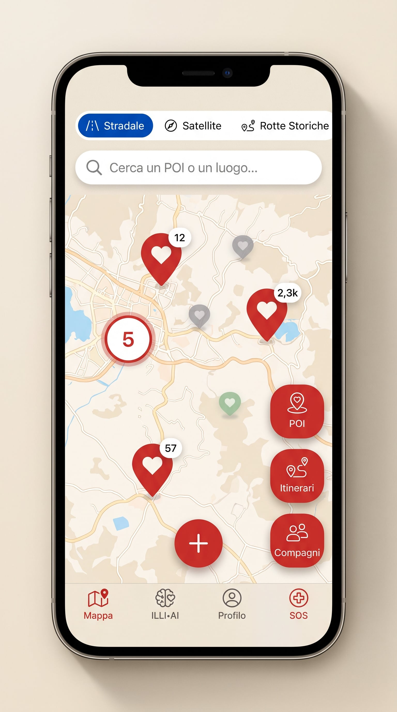
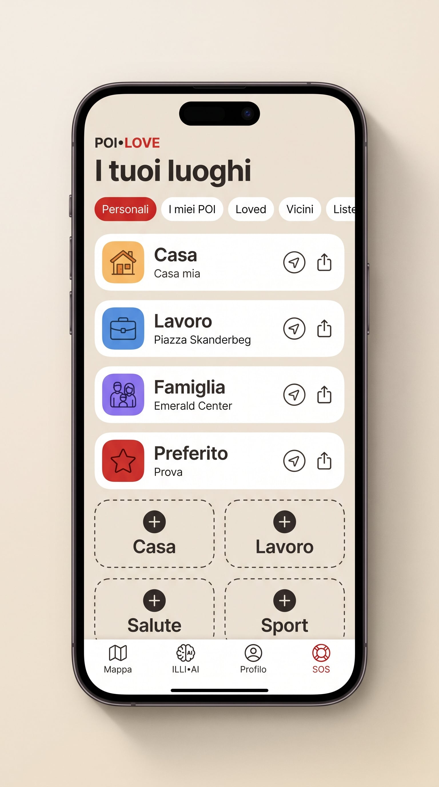
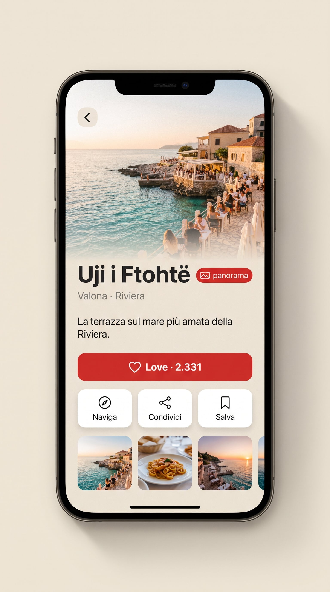
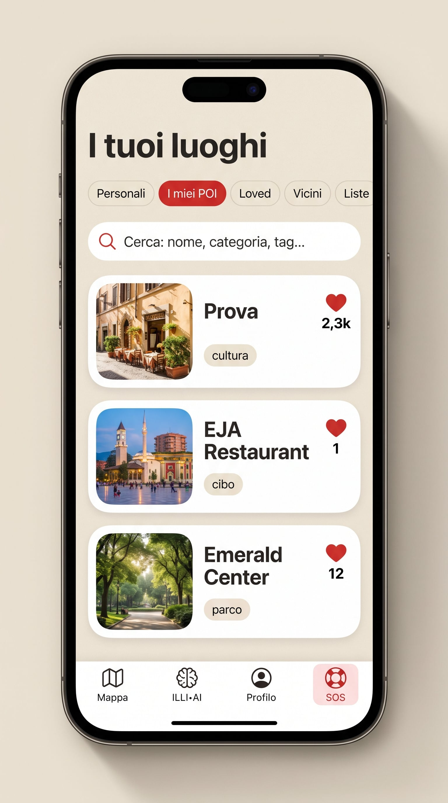
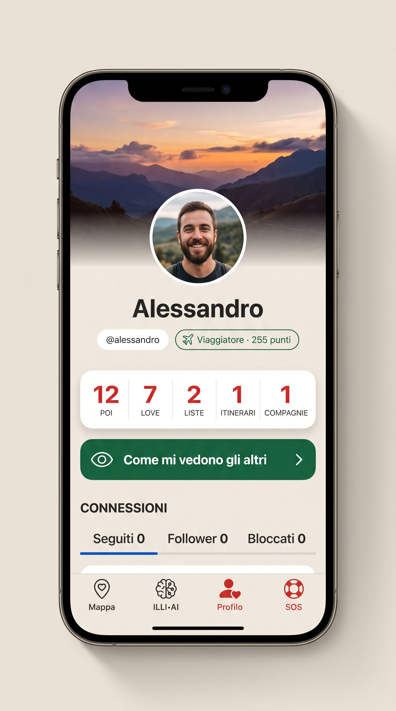

Vuoi far parte di questo progetto?
Dietro ogni cuore sulla mappa c'è una visione: leggila tutta.
Leggi la visione →POI•LOVE è la mappa fatta dalle persone che amano viaggiare. Li crei, li racconti, se vuoi li condividi con la community.

I luoghi che crei tu: casa, rifugi, scoperte. Sono la tua firma sulla mappa.
Gli amici e le voci di cui ti fidi: i loro luoghi ti accompagnano in viaggio.
Tutto il resto del mondo POI•LOVE, discreto sullo sfondo, pronto a farsi scoprire.
Crei i tuoi luoghi del cuore e raccogli love. Metti le tappe in fila e diventano itinerari da regalare. Con le compagnie di viaggio parti insieme agli amici: vi vedete sulla mappa e vi parlate coi vocali. E camminando rotte storiche e tour guadagni punti, distintivi e vantaggi.




Una foto, due parole, la posizione. Il tuo posto del cuore è sulla mappa in un minuto.
Il love è il voto che non si compra: dice al mondo che quel posto vale il viaggio.
Metti i luoghi in fila: nascono itinerari, liste da regalare, rotte storiche da camminare.
POI•LOVE non esce quando lo dice un calendario: esce quando la mappa è viva. Ogni luogo creato avvicina il giorno del lancio.
Intanto ILLI, la nostra guida, parte per un viaggio vero attraverso l'Albania: dai luoghi istituzionali ai posti che nessuna guida racconta. Ogni tappa del suo viaggio diventa un POI da seguire.
Dietro ogni cuore sulla mappa c'è una visione: leggila tutta.
Leggi la visione →